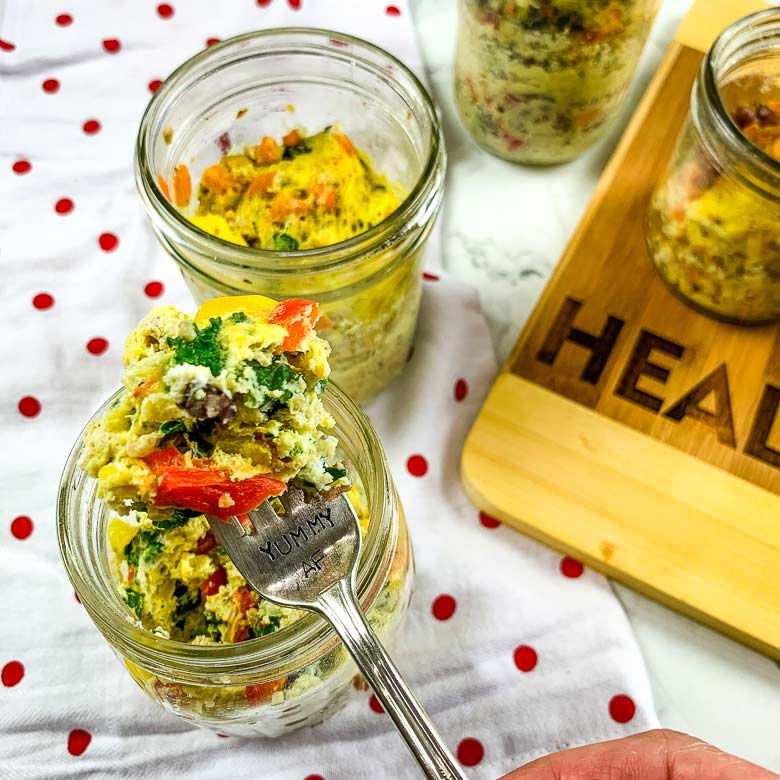

Just Crack an Egg
Click me to change my theme ... An egg scramble with different toppings is a breakfast dish made by whisking eggs in a bowl, pouring them into a heated skillet, and cooking until set. Various toppings such as diced vegetables, meats, cheeses, and herbs can be added and cooked with the eggs. This versatile dish can be customized to suit individual tastes and is an easy and nutritious breakfast option.
Ingredients:- what ever you want
- Instructions:
- Dice your ingredients. If you have meat or hard root veggies, cook them. If you like softer veggies, you can cook them too. Then assemble them and place into zipper bags. If you'd rather use another food safe and microwave safe container, be sure to use a little cooking spray first so they clean up nicely.
- Store your cups in the fridge or freezer. If storing in the fridge, make sure they're well covered with lids or even plastic wrap. When you're ready to cook these, just add an egg (or two) to them.
- Stir it up well. Place the microwave safe mug, bowl, or mason jar into the microwave and follow these guidelines:
- For two eggs: Place in microwave and cook for 1:30, stir if needed, then cook for another 1:3Add 30 seconds at a time if your scrambles aren't cooked through.
- For one egg: Place in microwave and cook for 1 minute, stir if needed, then cook for 1 more minute. Add 30 seconds at a time if your scrambles arent cooked through.